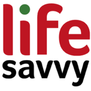
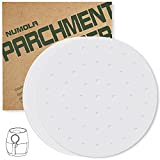
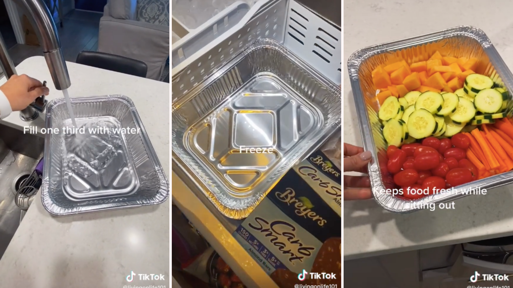

What’s the Deal with “Social Distancing,” and Is It Actually Effective?
Read any news about the coronavirus and, in addition to the suggestion to frequently and thoroughly wash your hands, there’s increased talk about social distancing.But what exactly does that entail?
The short of it, per the CDC’s own definition, is really straightforward even if the term itself might come off as abstract:
Your New Favorite Newsletter
Join over 50,000 subscribers and get a daily digest of featured articles, news, and shopping advice.
By submitting your email, you agree to the Terms of Use and Privacy Policy.
Social distancing means remaining out of congregate settings [crowded public places where close contact with others may occur, such as shopping centers, movie theaters, stadiums], avoiding mass gatherings, and maintaining distance (approximately 6 feet or 2 meters) from others when possible.
Although that might require some short-term lifestyle changes and adjustments, implementing it for most folks isn’t an outrageous undertaking: Trade going to the movies for watching Netflix, skip the leisurely Saturday at the mall shopping and eating out for online shopping and a meal in, etc.
The question most people would have, naturally, is whether social distancing is effective enough to be worth the hassle.Although we can’t give you an answer based on what’s happening with a currently ongoing epidemic, we have enough information about the spread of past outbreaks to suggest it’s a highly effective defense against spreading an infection.
Over at the Washington Post, for instance, they looked at different historical outbreaks and interviewed epidemiologists about them:
'Social distancing sounds humble, like washing hands,' said Caitlin Rivers, an epidemiologist at the Johns Hopkins Center for Health Security.But during the West Africa 2014 Ebola epidemic, one of the key strategies that helped stem the outbreak was people in the communities changing their behavior to minimize contact with others, she said.
Evidence for the efficacy of the practice dates back even further, though.For instance, during the 1918 flu pandemic, the cities of Philadelphia and St.Louis took different approaches to limiting public gatherings.Philadelphia was slower—taking a little over two weeks—to enact any social distancing rules to reduce how much time people spent in public gathered together.St.Louis acted more quickly, enacting measures within two days of the first reported case.Certainly other variables were at play, of course, but the peak mortality rate in Philadelphia was approximately 400% higher than the peak mortality rate in St.Louis.
So whether or not any dramatic restrictions are put in place in the United States—like those currently in effect in Italy—remains to be seen.Regardless, given the historical precedent for its effectiveness, there’s little harm in socially isolating yourself proactively, which you can do by opting to spend more evenings in and less time gathering in groups with people.
Further, and perhaps most importantly, even if you feel like the coronavirus isn’t a big risk for you—perhaps you’re in your 20s and the probability of it doing you in is, statistically speaking, very small—it’s worth doing it for others.You might have a young and robust immune system, but other people in your community and circle of friends and family might not.What could be only a week out sick from work for you, at worst, could be an extended hospital stay for your grandparents or a neighbor with an impaired immune system.
Opting to stay in and catch up on your ever-growing Netflix queue is a pretty small thing to do to slow down the spread of a virus that could pose a big threat to the more vulnerable people around you.
Posted On: 2020-03-12T10:40:00
Posted By: Jason Fitzpatrick





Content Date: 2020-03-12
Download Date: 2021-05-13
Document ID: L0C04BZ6D